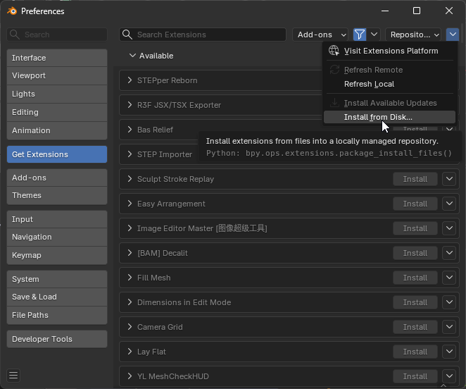

Zen BBQ Installation
There are two easy methods to install ZenBBQ archive directly into Blender.
Method 1: Drag and Drop (Recommended)
The fastest and most intuitive way to install the local extension:
- Open Blender.
- Open your operating system’s file manager and locate the downloaded
ZenBBQ_2_0.zipfile. - Simply drag the
.zipfile and drop it directly into the Blender 3D Viewport. - Confirm the action by clicking Install in the popup prompt.
Method 2: Install from Disk (Via Preferences)
If you prefer using Blender’s standard menus:
- Go to the top menu and open Edit — Preferences.
- Navigate to the Get Extensions tab on the left.
- Click the arrow icon ▾ (dropdown menu) located in the top-right corner of the Extensions window.
- Select Install from Disk… from the dropdown list.
- In the file browser, locate and select your downloaded
ZenBBQ_2_0.zipfile. - Verify that the Zen BBQ checkbox is checked (enabled) in your extensions list.
 |
|---|
| *Fig. 1. Blender Preferences panel. |
Technical Requirements & Verification
- Blender Version: Because Zen BBQ 2.0+ relies on the local extension architecture, it requires Blender 4.2 LTS or newer. For legacy versions of Blender, please use the legacy Zen BBQ 1.x addon format.
- Accessing the UI: Once successfully installed and activated, Zen BBQ will appear in the N-Panel (sidebar) of your 3D Viewport under the Zen BBQ tab. Alternatively, you can summon the Pie Menu using the global hotkey:
Ctrl + Shift + X.